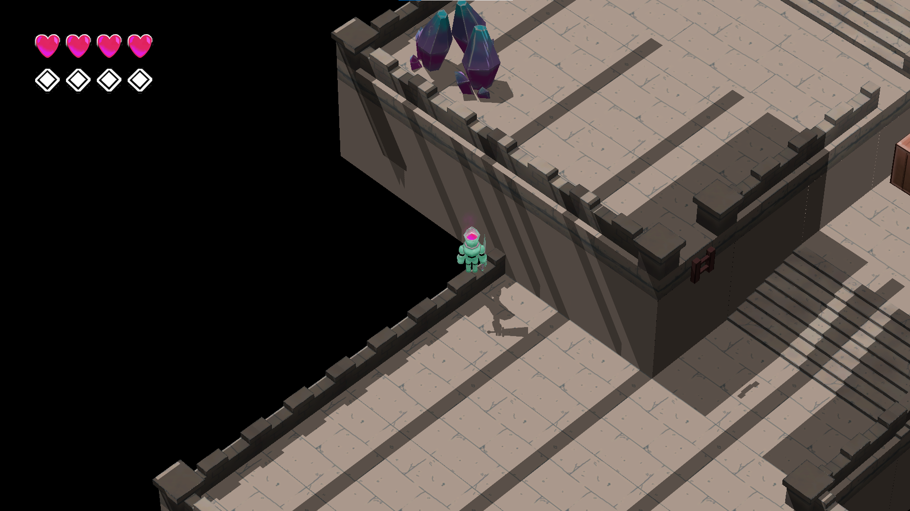
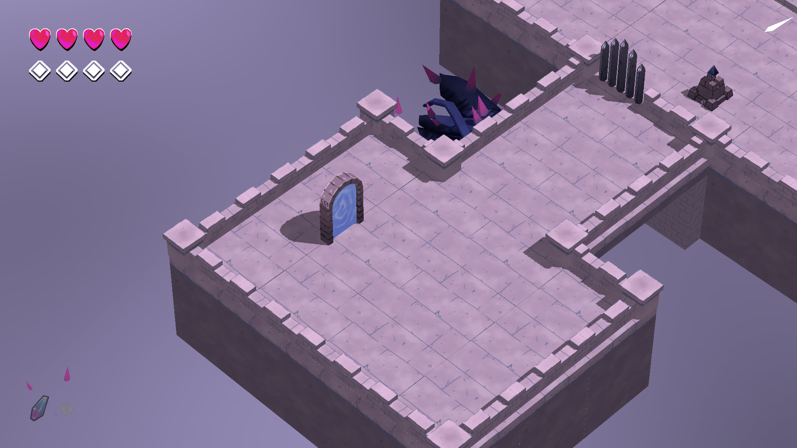
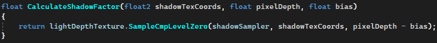
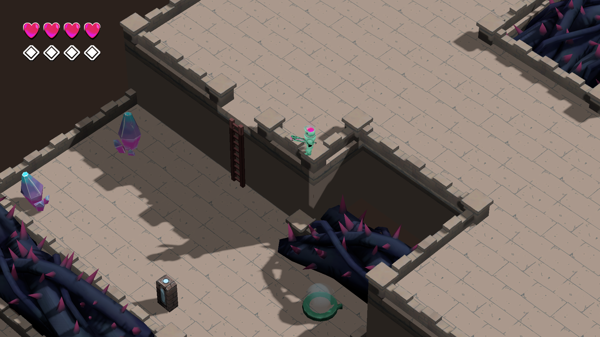
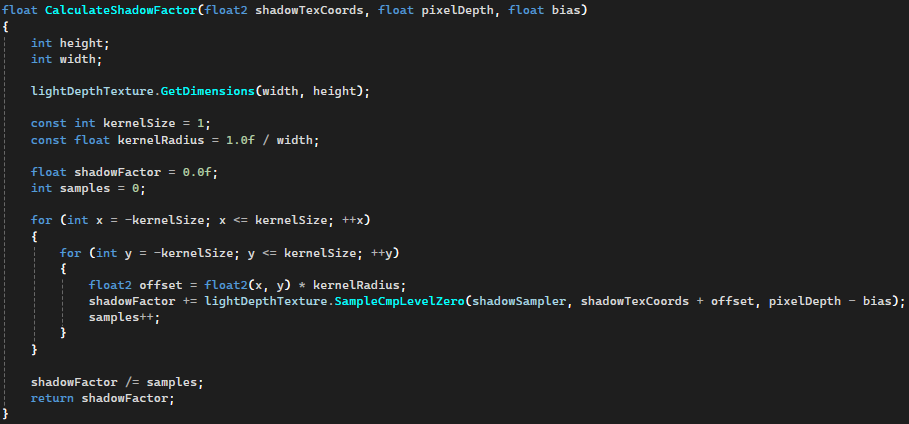
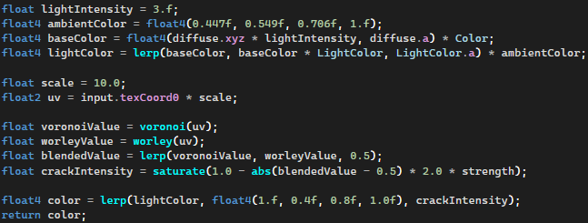
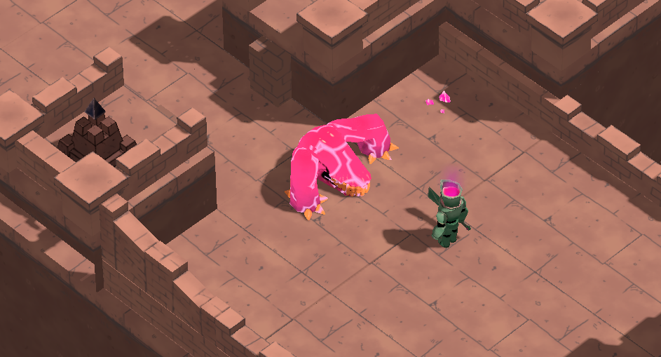

This game was made in
TGE (The Game Assembly in house engine)
Shadow Mapping
While making Golems Quest: Crystal Keep in around the middle of the project the world looked very wrong since we only had PBL lighting in the scene which only darkened the back of models.
I then decided i had to research how to make shadow maps and make the scene look way better. The main problem was we had just started our game engine and had no direction to how we could do this.
The saviour was Learn OpenGL and their great article about Shadow Mapping where i could find the basics for the shadow mapping.
While making the project we used DirectX11 and learn opengl is in OpenGL, but this was pretty easily translatable to DirectX11. Even with the tutorial it was no small feat, it was amazing when it actually worked since i had been working on it for so long and wanted results.

An image showing some wrongly projected shadows
The problem here was something to do with the camera projecting from the bottom of the world upwards and drawing shadows on the theoretical "backsides" since they are the forward for us but back for the shadow camera.
When i figured that out and moved the camera so it pointed downwards towards the world instead of upwards, this looked correct and projects shadow but now the shadows are very pixelated.

Shadows pixelated

Direct shadow sampling
I applied some Percent close filtering onto the shadows to blur out the edges to make them smoother and it looked much better

An image showing correctly projected and smoothened shadows

PCF Shadow sampling code
Monster Damage Shader
In the game Death's door when you hit an enemy they starts to glow and gets a bit cracked as a health indicator, since this was our refrence game we wanted something similar.
At that point i have had very little experience with HLSL(the shader language DirectX11 uses) but i knew the basics. I decided to see if i could make something remotely similar to how it looks in the Death's Door.
I tried a bunch of different cobinatios of noise, voronoy noise, blue noise and anything that could give me streaks, at last with the folowing pixelshader i got something that resembeled cracking when enemies are hit.

Enemies cracking PS shader
Result

A representation of how an enemy who has 1/3 of health left looks like
Closing Thoughts
This project was the game i learned the most till then, i both got to research and implement shadow mapping and learn how to make some cool shaders with some very simple noise textures.
It was very fun and after the shadows form this projecet i have reimplemented shadows two other projects one the same, DirectX11 and one time in OpenGL.
This game does not have an official site but the game can be downloaded with the button below